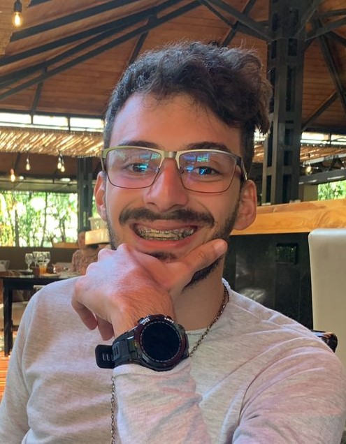

Sobre Mí
Hola, soy Sergio Suárez. Me encanta el helado y estudio en la Universidad Metropolitana Ingeniería en Sistemas. Decidí estudiar esta carreara porque quiero construir el futuro y me parece que la programación es la mejor herramienta para hacerlo. A largo plazo me gustaria viajar por el mundo, hacer a mi familia feliz y trabajar donde pueda traer innovación al mundo.
Gustos
Videojuegos
Musica
Viajar
Gym
Leer
Mi novia